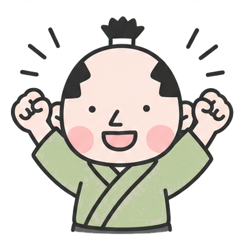

HAGAKURE PROGRAMMING塾 · LT
HAGAKUREメルマガ始めました。
大量コンテキストをAIに渡すことが普通になったなぁと思う話

2026.7.17焼き肉LT会＠南大門
01 · 今日いちばん言いたいこと
1年前より、
大量のコンテキストを
AIに投げて処理させるのが
当たり前になってきた。
この変化の上に、今回のメルマガがある。

02 · きっかけ
昔作ったスクリプトを、久しぶりに動かした
- Slack APIで一定期間のログを取るスクリプトは、結構前からあった
- 久しぶりに開いて実行すると、大量のメッセージが取れた
- 材料としての「長いログ」が手元に揃った

03 · 気づき（スタート）
今のAIなら、この量を一括でいける
- この量＝Slack1ヶ月分でだいたい5,000行ぐらい
- 2026年の性能なら、このくらいのコンテキストをまとめて処理できる
- 「いろんなことに使えるな」と思った
- ここがスタート（最初からメルマガありきではなかった）
長いコンテキストが取れた瞬間に、用途が開き始めた。

04 · 使い道
久しぶりの人向けの活動メルマガ
- 何に使うかを考えた
- 最近参加していない人に、最近の活動を見せたい
- 興味を持ってもらう・戻ってきてもらう入口になるのでは
目的は「技術デモ」ではなく、コミュニティへの情報の届け方。

06 · 本文
HTML形式のメールとして作らせた
- 取得したログを材料にする
- 運営で決めた方針を踏まえて本文化
- メルマガ用のHTMLとしてAIに作成させた
長いログ
→
方針
→
HTML本文

まとめ
長いコンテキストを投げられるようになった。
前提を変えて試すと、今まで発想できなかったことができる。
- 活用はメルマガだけじゃない
- NINJA-KUN：週間のSlackまとめ配信、ブログネタ候補の投稿BOT
- 他にもアイデアを出していきたい
またアイデアあれば教えてください。

ご清聴ありがとうございました